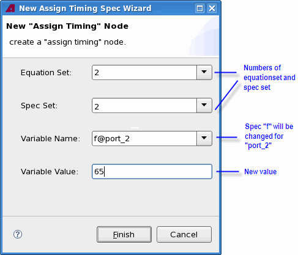

Changing spec values at run time
Level and timing spec values can change at run time using the firmware command SVLR or in the New Assign Level Spec Wizard and New Assign Timing Spec Wizard windows in the Flow Sequence Editor.
Timing spec values are changed in the New Assign Timing Spec Wizard window for both multiport and single-port tests. However, a multiport test requires multiport specific entries. The following figure shows the New Assign Timing Spec Wizard window to change timing spec values at run time.

- Spec values can be changed locally for a certain port. To do so simply append the port name to the spec name, separated by @. In the figure above, the spec name is f. The new value is set locally for port_2.
- Spec values can be changed globally as well. In this case, enter only the spec name without a port number.
Functional changes
- Introduced before SmarTest 6.3.2
- SmarTest 6.5.2: When you change a timing or level spec at run time for a multiport test, the number of the equation set and spec set must be entered.